Dia Internacional de la madre Tierra

- 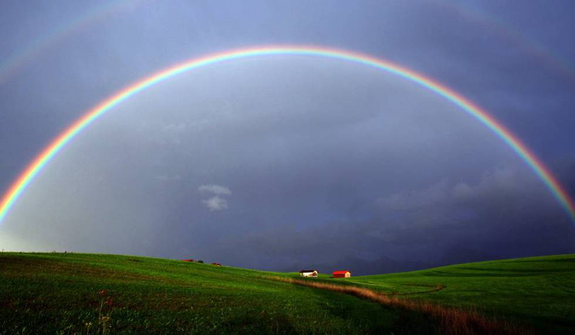
- 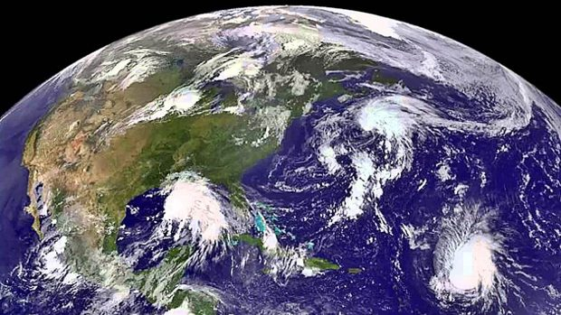
- 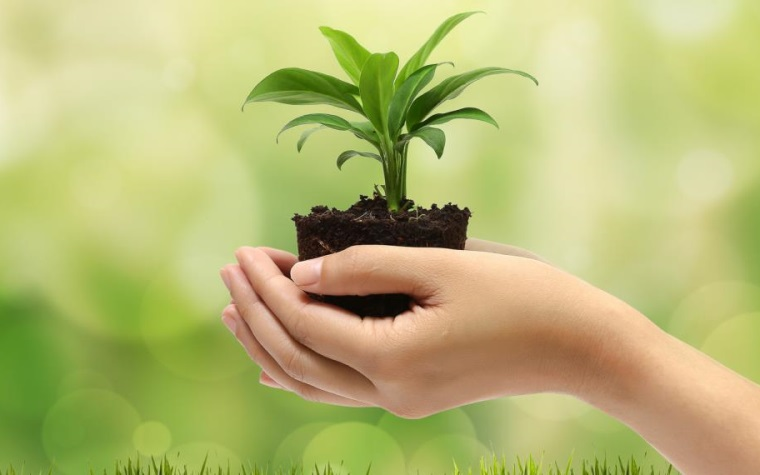
- 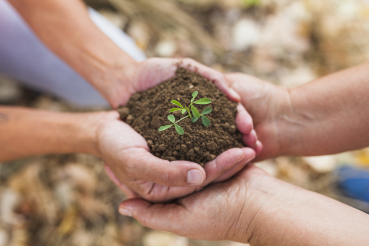
- 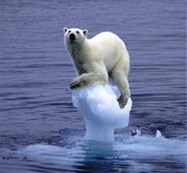
- 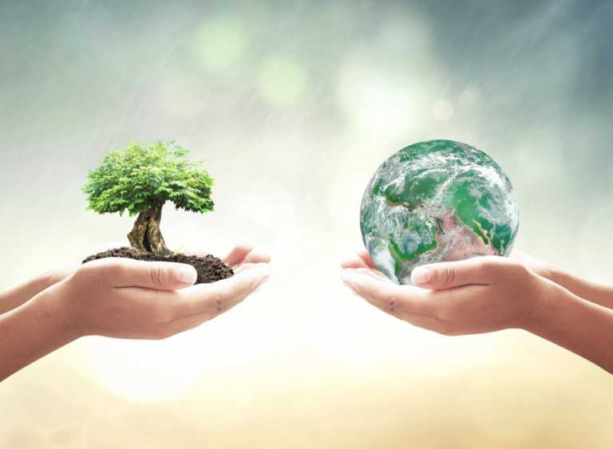
- 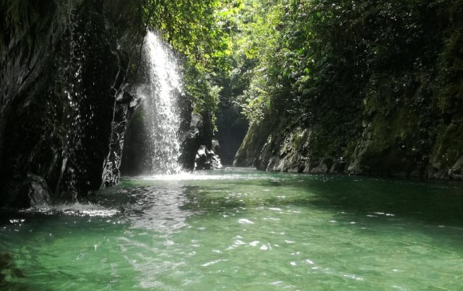
Realizado por:
María Guadalupe López Eliosa
4° "E"
Especialidad:
Programacion
Submódulo:
Desarrola Aplicaciones Móviles
Docente:
Lic. Jose Antonio Gómez Hernández
4° "E"
Programacion
Desarrola Aplicaciones Móviles
Lic. Jose Antonio Gómez Hernández
Celebramos el Día Internacional de la Madre Tierra para recordar que el planeta y sus ecosistemas nos dan la vida y el sustento. Con este dia, asumimos, ademas, la responsabilidad colectiva, como nos recordaba la Declaracion de Río de 1992, de fomentar esta armonia con la naturaleza y la madre Tierra. Este dia nos brinda tambien la oportunidad de concienciar a todos los hab itantes del planeta acerca de los problemas que afectan a la Tierra y a las diferente formas de vida que en él se desarrollan.
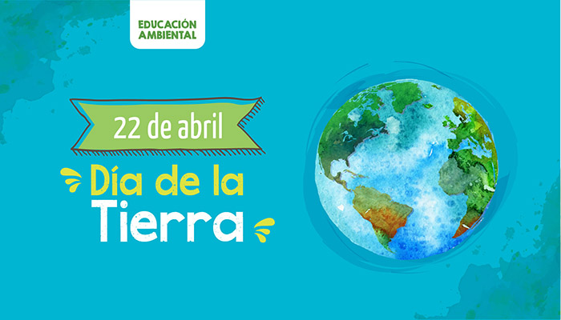El 22 de abril de cada año se celebra el Día Mundial de la Tierra. Su origen en 1970 establece el inicio del movimiento ambientalista moderno, cuando 20 millones de norteamericanos tomaron las calles, parques y auditorios para manifestarse por un ambiente saludable y sustentable. Desde sus inicios, el Día de la Tierra logró una coincidencia política que parecía imposible, contando con el apoyo de distintas tendencias y posición económica, así como personas comunes, magnates y líderes sindicales.
La celebración mundial condujo a la creación de la Agencia de Protección Ambiental (EPA) de Estados Unidos de Norteamérica, así como la aprobación de leyes relacionadas con el aire y el agua limpia, y la conservación de especies en peligro de extinción. A partir de entonces, cada año en esta fecha, el mundo entero reflexiona y se moviliza por una Tierra mejor.
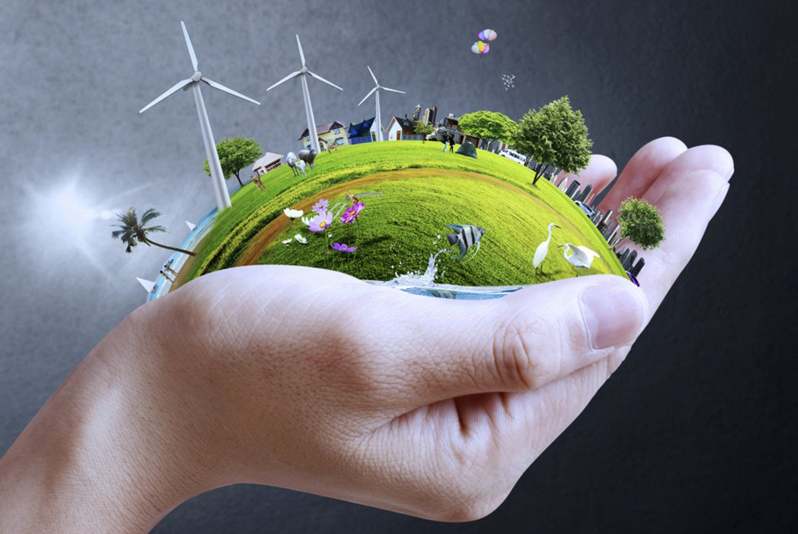La Tierra y sus ecosistemas son nuestro hogar. Para alcanzar un justo equilibrio entre las necesidades económicas, sociales y ambientales de las generaciones presentes y futuras, es necesario promover la armonía con la naturaleza y el planeta. Celebramos el Día Internacional de la Madre Tierra para recordar que el planeta y sus ecosistemas nos dan la vida y el sustento. Con este día, asumimos, además, la responsabilidad colectiva, como nos recordaba la Declaración de Río de 1992, de fomentar esta armonía con la naturaleza y la Madre Tierra.
Este día nos brinda también la oportunidad de concienciar a todos los habitantes del planeta acerca de los problemas que afectan a la Tierra y a las diferentes formas de vida que en él se desarrollan.«Madre Tierra» es una expresión común utilizada para referirse al planeta Tierra en diversos países y regiones, lo que demuestra la interdependencia existente entre los seres humanos, las demás especies vivas y el planeta que todos habitamos.
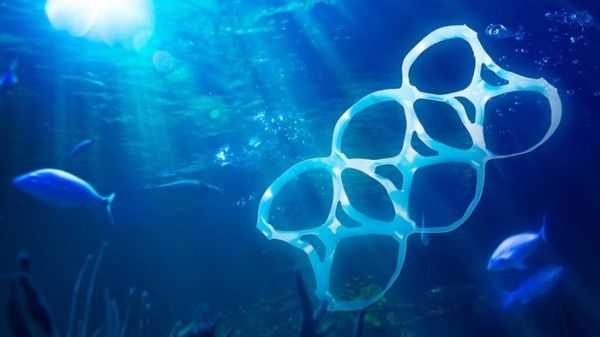La armonía con la naturaleza es un sentimiento que los humanos experimentamos cuando estamos en equilibrio con la misma. En VerdelaTierra la armonía con la naturaleza es uno de los valores que nos identifica y en el que subyace también nuestra creencia de que es posible y deseable el equilibrio armónico humano-naturaleza, que nos da bienestar, salud y una calidad de vida con respecto al medio ambiente.
La armonía con la naturaleza, además, se ha resaltado como un objetivo a alcanzar en el informe “Armonía con la naturaleza”, Diálogos Interactivos de la Asamblea General de Naciones Unidas, elaborado a propósito del Día Internacional de la Madre Tierra y a manera de preámbulo a la Conferencia de las Naciones Unidas sobre el Desarrollo Sostenible que se efectuó en Río de Janeiro (Brasil) en el año 2012. En dicho documento cobra importancia la necesidad de una nueva mentalidad y una importante transformación cultural para hacer posible la armonía con la naturaleza. También se menciona lo fundamental de un nuevo sistema económico que permita una sociedad más sostenible y que tenga como valor intrínseco el respeto profundo por la Tierra.Naciones Unidas afirma que instituciones, círculos académicos y organizaciones científicas, económicas y de la sociedad civil piden que la humanidad trate al planeta con respeto y que ese respeto se materializará únicamente cuando los humanos cambien la manera de percibir su relación con la naturaleza, dejando a un lado esa errónea idea de ser dueños del planeta, en vez de actuar como guardianes.
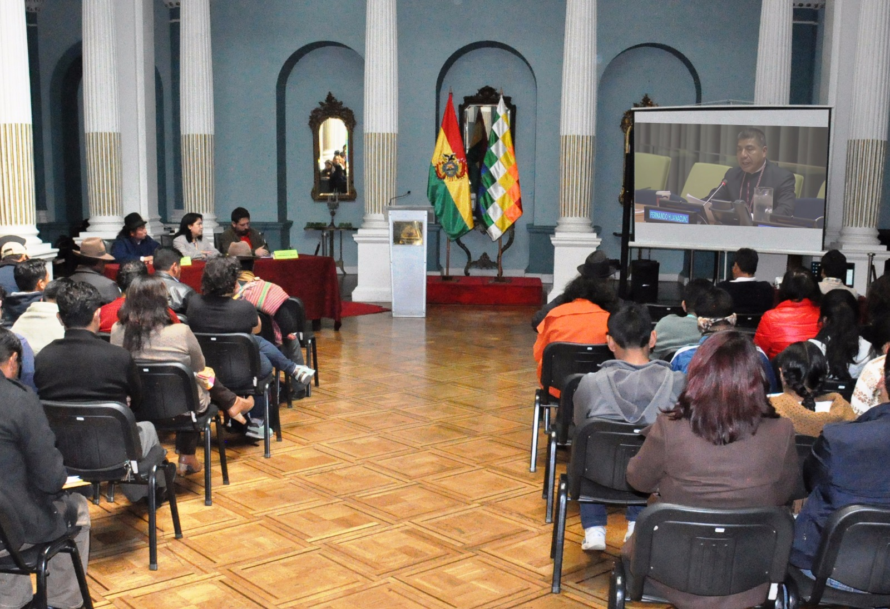La gestión integrada de paisajes requiere comprender los diferentes impactos del uso de la tierra y equilibrar los intereses a menudo contradictorios de los diferentes grupos involucrados. Imaginemos que usted forma parte del gobierno del país X en África subsahariana. Desea cumplir con el Objetivo de Desarrollo Sostenible No. 1 que reza: “acabar con la pobreza en todas sus formas en todas partes". Sin embargo, es consciente de la necesidad de implementar todos los 17 Objetivos, incluido el Objetivo 15, que busca: "Gestionar sosteniblemente los bosques, luchar contra la desertificación, detener e invertir la degradación de las tierras y detener la pérdida de biodiversidad.”
Para que un gobierno y las personas se beneficien de manera sostenible de tales ofertas, todas las partes interesadas deben participar desde el principio. Eso significa que el gobierno nacional, el gobierno local, los pequeños agricultores y otros pueblos marginados, terratenientes, grupos de conservación de la vida silvestre, etc. deben estar en la mesa cuando se tomen decisiones. Los datos e información ambiental y macroeconómica de buena calidad son esenciales. Los riesgos y beneficios potenciales y los impactos ambientales de cualquier acuerdo deben ser revisados ??minuciosamente por todos los involucrados. El gobierno y otras partes interesadas necesitan tener la capacidad técnica para equilibrar los diferentes intereses y permitir que se llegue a un consenso con todas las partes para el beneficio de todos, sin dañar el medio ambiente. 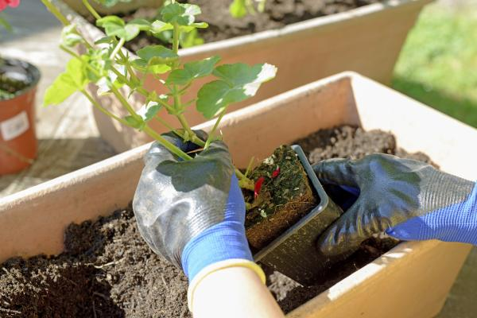